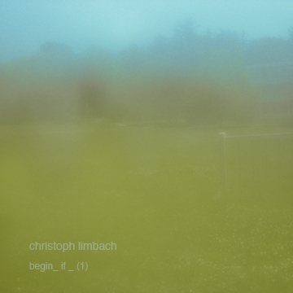
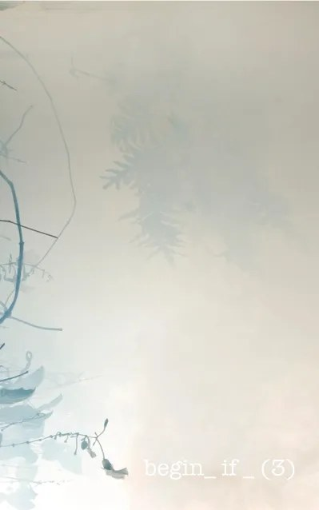
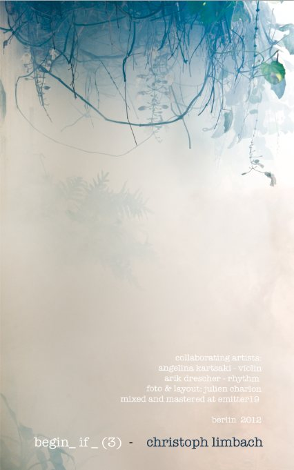
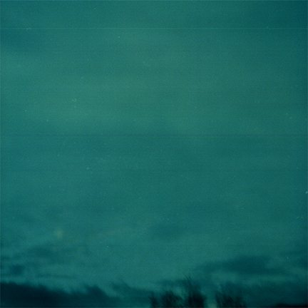

begin _if_ ()
A long term, strictly diaristic series of sound works, first conceived in Madrid in 2005 and brought to life in Berlin in 2009. It joins field recordings and studio work, cutting techniques from visual design and film post production, concrete sounds and improvisation. Each release develops its own approach to sound in dialogue with a different carrier, physical or not. The series follows Hidden Variable Theories: the concept behind each work stays hidden to the listener.
- begin _if_ (4)2022 · Contour Editions
- begin _if_ (3)2014 · cassette, Agxivatein, recorded in Berlin 2012 · the tape itself as material: hiss and saturation, field recordings from Tokyo and Berlin, vinyl and tape manipulation · review in The Sound Projector
- begin _if_ (2)2010 · modisti netlabel and framework:afield · with Sarah Pitsulala Reaburn and Bajba, vocals
- begin _if_ (1)2009 · Contour Editions (Richard Garet) · with Luisa Kraft, flute



